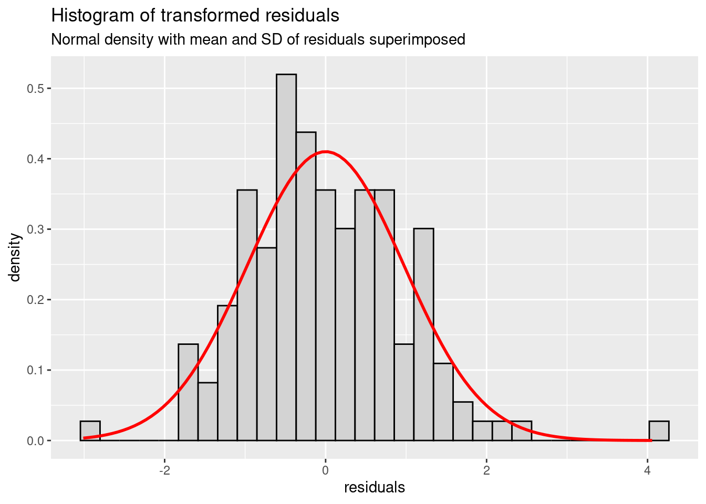
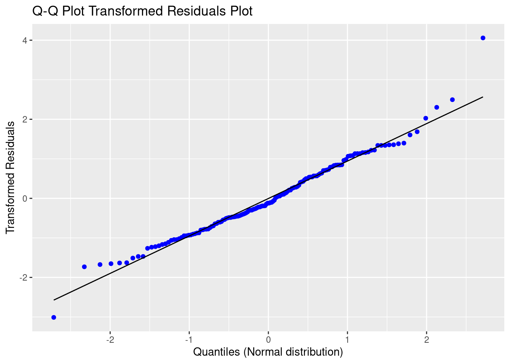
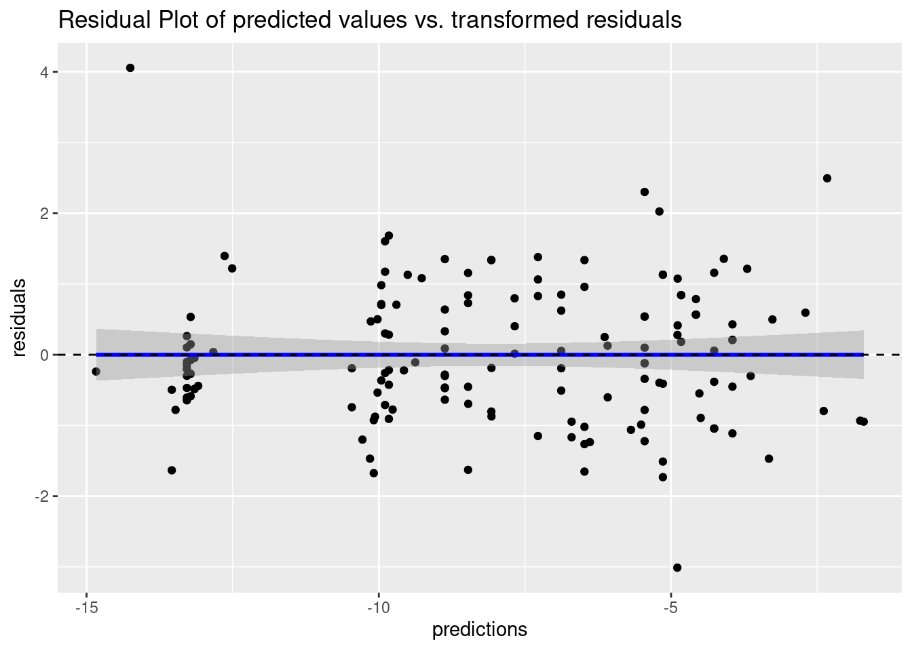
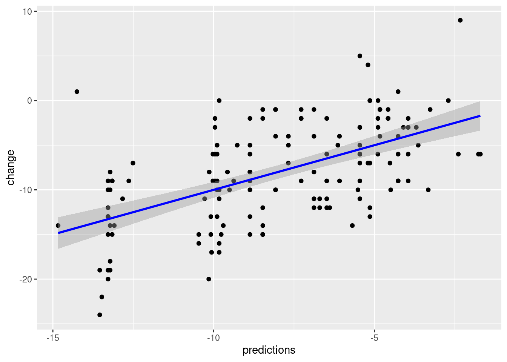

library(mmrm)
?mmrm3 Inference from Longitudinal Data
This section will focus on the application of Mixed Model with Repeated Measures (MMRMs). Our main focus will be the modeling of the means of the data. MMRMs are generalizations of standard linear models in the way that data is allowed to be correlated between subsequent measurements from the same subject and exhibit non-constant variability.
The primary assumptions for MMRMs are:
The data are normally distributed
The means (expected values) of the data are linear in terms of a certain set of parameters.
The variances and covariances of the data are in terms of a different set of parameters, and they exhibit a structure matching one of those outlined in the former chapter.
[Alex to add reference to PROC MIXED]
The mixed linear model can be described via the following formula
\[ y_i = X_i\beta\,+\,Z_i\gamma_i\,+\,\varepsilon_i\,,\, i = 1,\ldots,N \]
where \(y\) is the vector of responses (observed data, dependent variable), \(\beta\) is an unknown vector of fixed effects with known design matrix \(X\), \(\gamma\) is an unknown vector of random effects with known design matrix \(Z\), and \(\varepsilon\) is an unknown random error vector. Furthermore \(N\) denotes the total number of subjects in our analysis. For the sake of readability, we will omit the subject index and simplify the above formula to
\[ y = X\beta\,+\,Z\gamma\,+\,\varepsilon\,. \]
We will further assume that \(\gamma\) and \(\varepsilon\) are uncorrelated Gaussian random variables with expectation \(0\) and variances \(G\) and \(R\), respectively. Then the variance-covariance matrix of \(y\) is given by
\[ \text{Var}(y) := V = ZGZ' + R\,. \] In this case \(ZGZ'\) comprises the random effects component, and \(R\) is the within-subject component.
In this workshop we will focus on the case where only the within-subject component is accounted for, via modeling of the \(R\) matrix. The random effects component \(Z\gamma\) will be omitted. In this case we will have \(\text{Var}(y) = V = R\), resulting in a model given by
\[ y = X\beta\,+\,\varepsilon\,. \]
3.1 Categorical Time
You can start and familiarise yourself with the main function mmrm() using the command
Two inputs are strictly required to get mmrm() to work:
A model formula
The dataset, containing the response, as well as all fixed effects and variables in the covariance matrix.
Exercise: Fit a model fit_cat_time using the dataset all2, with change as dependent variable, baseline value, visit, baseline by visit interaction and treatment by visit interaction as fixed effects and an unstructured covariance matrix for visits within each subject.
How do different choices for covariance matrices change the results? What is the difference on the estimation procedure?
You can obtain a summary of the fit results via
summary(fit_cat_time). How do you interpret the fit summary?Look at the structure of the fit summary and try to extract the estimate of the \(R\) matrix.
fit_cat_time <- mmrm::mmrm(
formula = change ~ basval*avisit + trt*avisit + us(avisit | subject),
data = all2,
control = mmrm_control(method = "Kenward-Roger")
)
summary(fit_cat_time)mmrm fit
Formula: change ~ basval * avisit + trt * avisit + us(avisit | subject)
Data: all2 (used 150 observations from 50 subjects with maximum 3
timepoints)
Covariance: unstructured (6 variance parameters)
Method: Kenward-Roger
Vcov Method: Kenward-Roger
Inference: REML
Model selection criteria:
AIC BIC logLik deviance
822.4 833.9 -405.2 810.4
Coefficients:
Estimate Std. Error df t value Pr(>|t|)
(Intercept) 1.98452 3.27479 47.00000 0.606 0.54743
basval -0.31235 0.15905 47.00000 -1.964 0.05548 .
avisitWeek 4 -0.90862 2.39866 47.00000 -0.379 0.70654
avisitWeek 8 -10.58630 3.45922 47.00000 -3.060 0.00365 **
trt2 -1.18993 1.27265 47.00000 -0.935 0.35457
basval:avisitWeek 4 -0.08542 0.11650 47.00000 -0.733 0.46704
basval:avisitWeek 8 0.24779 0.16801 47.00000 1.475 0.14691
avisitWeek 4:trt2 -0.80100 0.93217 47.00000 -0.859 0.39454
avisitWeek 8:trt2 -2.20106 1.34432 47.00000 -1.637 0.10825
---
Signif. codes: 0 '***' 0.001 '**' 0.01 '*' 0.05 '.' 0.1 ' ' 1
Covariance estimate:
Week 2 Week 4 Week 8
Week 2 20.6112 15.3034 12.2766
Week 4 15.3034 21.3565 17.6648
Week 8 12.2766 17.6648 27.6127We can assess the structure of the fit summary via
str(summary(fit_cat_time))List of 15
$ cov_type : chr "us"
$ reml : logi TRUE
$ n_groups : int 1
$ n_theta : int 6
$ n_subjects : int 50
$ n_timepoints : int 3
$ n_obs : int 150
$ beta_vcov : num [1:9, 1:9] 10.724 -0.501 -2.675 -4.267 -1.047 ...
..- attr(*, "dimnames")=List of 2
.. ..$ : chr [1:9] "(Intercept)" "basval" "avisitWeek 4" "avisitWeek 8" ...
.. ..$ : chr [1:9] "(Intercept)" "basval" "avisitWeek 4" "avisitWeek 8" ...
$ varcor : num [1:3, 1:3] 20.6 15.3 12.3 15.3 21.4 ...
..- attr(*, "dimnames")=List of 2
.. ..$ : chr [1:3] "Week 2" "Week 4" "Week 8"
.. ..$ : chr [1:3] "Week 2" "Week 4" "Week 8"
$ method : chr "Kenward-Roger"
$ vcov : chr "Kenward-Roger"
$ coefficients : num [1:9, 1:5] 1.985 -0.312 -0.909 -10.586 -1.19 ...
..- attr(*, "dimnames")=List of 2
.. ..$ : chr [1:9] "(Intercept)" "basval" "avisitWeek 4" "avisitWeek 8" ...
.. ..$ : chr [1:5] "Estimate" "Std. Error" "df" "t value" ...
$ n_singular_coefs: int 0
$ aic_list :List of 4
..$ AIC : num 822
..$ BIC : num 834
..$ logLik : num -405
..$ deviance: num 810
$ call : language mmrm::mmrm(formula = change ~ basval * avisit + trt * avisit + us(avisit | subject), data = all2, control = | __truncated__
- attr(*, "class")= chr "summary.mmrm"and then extract the covariance matrix
summary(fit_cat_time)$varcor Week 2 Week 4 Week 8
Week 2 20.61117 15.30339 12.27661
Week 4 15.30339 21.35648 17.66478
Week 8 12.27661 17.66478 27.612713.2 Continuous Time
Time as continuous effect -> single df for time and trt-by-time interaction
Modeling: - Need avisit for structure of covariance matrix - Implicit assumption is for the covariance between values for two timepoints to be equal, regardless of the specific timing
fit_cont_time <- mmrm::mmrm(
formula = change ~ basval*time + trt*time + us(avisit | subject),
weights = all2$time,
data = all2,
control = mmrm_control(method = "Kenward-Roger")
)Quadratic trend
all2$timesq <- all2$time^2
fit_cont_timesq <- mmrm::mmrm(
formula = change ~ basval*timesq + trt*timesq + us(avisit | subject),
weights = all2$time,
data = all2,
control = mmrm_control(method = "Kenward-Roger")
)model checks - residuals per time point
3.3 Baseline as a Response (cLDA + LDA)
3.4 (Adjusted) LS Means from MMRMs
LS Means are means of the dependent variable adjusted for covariates in the statistical model. We can obtain LS Means estimates and contrasts allowing for a treatment comparison using the emmeans package.
Example: Calculate the observed (raw) means of changes along with number of patients by treatment group from the dataset all2 overall and by visit. Then take the model fit_cat_time and derive the respective LS Means from the model. What do you observe?
# Raw means
all2 %>%
dplyr::group_by(group) %>%
dplyr::summarise(
N = dplyr::n(),
Mean = mean(change),
.groups = "drop"
)# A tibble: 2 × 3
group N Mean
<fct> <int> <dbl>
1 Arm 1 75 -6.96
2 Arm 2 75 -9.03all2 %>%
dplyr::group_by(group, avisit) %>%
dplyr::summarise(
N = dplyr::n(),
Mean = mean(change),
.groups = "drop"
)# A tibble: 6 × 4
group avisit N Mean
<fct> <fct> <int> <dbl>
1 Arm 1 Week 2 25 -4.2
2 Arm 1 Week 4 25 -6.8
3 Arm 1 Week 8 25 -9.88
4 Arm 2 Week 2 25 -5.24
5 Arm 2 Week 4 25 -8.6
6 Arm 2 Week 8 25 -13.2 The respective LS Means from the model with time as a fixed factor yields the following estimates:
library(emmeans)
emmeans::ref_grid(fit_cat_time)'emmGrid' object with variables:
basval = 19.56
avisit = Week 2, Week 4, Week 8
trt = 1, 2emmeans(fit_cat_time, ~trt)NOTE: Results may be misleading due to involvement in interactions trt emmean SE df lower.CL upper.CL
1 -6.90 0.836 47 -8.58 -5.22
2 -9.09 0.836 47 -10.77 -7.41
Results are averaged over the levels of: avisit
Confidence level used: 0.95 emmeans(fit_cat_time, ~trt*avisit) trt avisit emmean SE df lower.CL upper.CL
1 Week 2 -4.13 0.899 47 -5.93 -2.32
2 Week 2 -5.31 0.899 47 -7.12 -3.51
1 Week 4 -6.70 0.916 47 -8.55 -4.86
2 Week 4 -8.70 0.916 47 -10.54 -6.85
1 Week 8 -9.86 1.033 47 -11.94 -7.79
2 Week 8 -13.26 1.033 47 -15.33 -11.18
Confidence level used: 0.95 3.4.1 Observed vs. balanced margins
In the example above we have used the standard option for the weights in the calculation of LS Means. We will delve deeper into the following two options and will try to understand the difference:
weights = "equal": Each stratum induced by covariate levels is assigned the same weight in the calculation of the LS Means. This is the default option.weights = "proportional": Each stratum induced by covariate levels is assigned a weight according to their observed proportion in the calculation of the LS Mean. This option gives each stratum a weight corresponding to its size. Estimates using this option are reflective of the balance of covariates in the data.
Exercise: Based on the fit_cat_time model, compare the LS Means for the change in the response variable by treatment overall and treatment by visit interaction using the different options for weight. Compare the results for the two LS Means options to the observed means and to one another.
Discuss the following points:
- Why is there no difference between LS Means estimates for the overall treatment effect and the treatment by visit interaction? (Hint: Create a frequency table)
Now update the fit_cat_time model to fit_cat_time2, and include the covariate gender. Estimate the same LS Means for the change in the response variable by treatment (overall) and treatment by visit interaction.
Why is there a difference now between results from the different LS Means options? (Hint: another frequency table can help)
What effect could missing data have on the estimation, even in the case of
fit_cat_time? I.e. what would happen if this data was not complete but subject to missingness, with the degree of missing data increasing over time and being disproportionate between treatment arms?
Solution:
We first calculate the LS Means, using the different weights options and find they are indeed identical.
# These will yield the same results:
emmeans(fit_cat_time, ~trt, weights = "equal")NOTE: Results may be misleading due to involvement in interactions trt emmean SE df lower.CL upper.CL
1 -6.90 0.836 47 -8.58 -5.22
2 -9.09 0.836 47 -10.77 -7.41
Results are averaged over the levels of: avisit
Confidence level used: 0.95 emmeans(fit_cat_time, ~trt, weights = "proportional")NOTE: Results may be misleading due to involvement in interactions trt emmean SE df lower.CL upper.CL
1 -6.90 0.836 47 -8.58 -5.22
2 -9.09 0.836 47 -10.77 -7.41
Results are averaged over the levels of: avisit
Confidence level used: 0.95 emmeans(fit_cat_time, ~trt*avisit, weights = "equal") trt avisit emmean SE df lower.CL upper.CL
1 Week 2 -4.13 0.899 47 -5.93 -2.32
2 Week 2 -5.31 0.899 47 -7.12 -3.51
1 Week 4 -6.70 0.916 47 -8.55 -4.86
2 Week 4 -8.70 0.916 47 -10.54 -6.85
1 Week 8 -9.86 1.033 47 -11.94 -7.79
2 Week 8 -13.26 1.033 47 -15.33 -11.18
Confidence level used: 0.95 emmeans(fit_cat_time, ~trt*avisit, weights = "proportional") trt avisit emmean SE df lower.CL upper.CL
1 Week 2 -4.13 0.899 47 -5.93 -2.32
2 Week 2 -5.31 0.899 47 -7.12 -3.51
1 Week 4 -6.70 0.916 47 -8.55 -4.86
2 Week 4 -8.70 0.916 47 -10.54 -6.85
1 Week 8 -9.86 1.033 47 -11.94 -7.79
2 Week 8 -13.26 1.033 47 -15.33 -11.18
Confidence level used: 0.95 Now we can update the model to include the covariate gender. We can specify this a new model using the mmrm() function again, or simply use update() to add the new covariate to the model. Either way is fine, and a look into the model formula from the fit summary shows the two approaches work interchangeably.
fit_cat_time2 <- update(fit_cat_time, . ~ . + gender)
summary(fit_cat_time2)mmrm fit
Formula:
change ~ basval + avisit + trt + (us(avisit | subject)) + gender +
basval:avisit + avisit:trt
Data: all2 (used 150 observations from 50 subjects with maximum 3
timepoints)
Covariance: unstructured (6 variance parameters)
Method: Kenward-Roger
Vcov Method: Kenward-Roger
Inference: REML
Model selection criteria:
AIC BIC logLik deviance
817.0 828.5 -402.5 805.0
Coefficients:
Estimate Std. Error df t value Pr(>|t|)
(Intercept) 0.47589 3.23944 46.14000 0.147 0.88385
basval -0.30674 0.15200 45.44000 -2.018 0.04951 *
avisitWeek 4 -0.90862 2.39786 47.00000 -0.379 0.70645
avisitWeek 8 -10.58630 3.45626 47.00000 -3.063 0.00362 **
trt2 -0.34868 1.30287 46.74000 -0.268 0.79016
genderM 2.32931 1.29556 45.99000 1.798 0.07876 .
basval:avisitWeek 4 -0.08542 0.11646 47.00000 -0.734 0.46689
basval:avisitWeek 8 0.24779 0.16786 47.00000 1.476 0.14657
avisitWeek 4:trt2 -0.80100 0.93186 47.00000 -0.860 0.39439
avisitWeek 8:trt2 -2.20106 1.34318 47.00000 -1.639 0.10795
---
Signif. codes: 0 '***' 0.001 '**' 0.01 '*' 0.05 '.' 0.1 ' ' 1
Covariance estimate:
Week 2 Week 4 Week 8
Week 2 18.8295 14.3160 12.0002
Week 4 14.3160 21.1623 18.1813
Week 8 12.0002 18.1813 28.8384A look into the reference grid shows us the new factor levels for gender. Note that gender itself will not be included in the emmeans() statement, but the output indicates the averaging over its levels (same for the levels of avisit)
# Reference grid shows us the new levels
emmeans::ref_grid(fit_cat_time2)'emmGrid' object with variables:
basval = 19.56
avisit = Week 2, Week 4, Week 8
trt = 1, 2
gender = F, M# These two won't yield the same results
emmeans(fit_cat_time2, ~trt, weights = "equal")NOTE: Results may be misleading due to involvement in interactions trt emmean SE df lower.CL upper.CL
1 -7.13 0.840 45.8 -8.82 -5.44
2 -8.48 0.896 46.4 -10.28 -6.68
Results are averaged over the levels of: avisit, gender
Confidence level used: 0.95 emmeans(fit_cat_time2, ~trt*avisit, weights = "proportional") trt avisit emmean SE df lower.CL upper.CL
1 Week 2 -4.55 0.890 46.2 -6.34 -2.75
2 Week 2 -4.89 0.890 46.2 -6.69 -3.10
1 Week 4 -7.13 0.941 47.1 -9.02 -5.23
2 Week 4 -8.27 0.941 47.1 -10.17 -6.38
1 Week 8 -10.29 1.081 46.6 -12.46 -8.11
2 Week 8 -12.83 1.081 46.6 -15.01 -10.66
Results are averaged over the levels of: gender
Confidence level used: 0.95 The following frequency table shows the imbalance in the distribution of the gender variable. We can see that Treatment 1 has more men than women, whereas Treatment 2 has more women than men.
table(all2$trt, all2$gender)
F M
1 30 45
2 57 18The data is no longer balanced across the covariates in the model. The weights = "equal" option is agnostic to this imbalance and assigns all levels equal weights, whereas the weights = "proportional" assigns a weight reflecting the proportional size of the stratum over which the average is taken.
3.4.2 Contrasts
3.5 Fit diagnostics
The following section closely follows the content in Chapter 10 in (Fitzmaurice 2011).
Our analysis should be concluded with a look into the fit diagnostics, more specifically, the residuals. Residuals are defined by the difference between the true responses and the fitted values from the model:
\[ r := y - X\hat\beta\,, \] where \(\hat\beta\) are the estimated coefficients from our model. Residuals provide an estimate of the true vector of random errors
\[ \varepsilon = y - X\beta\,. \]
As per our modeling assumptions, \(\varepsilon\) should follow a normal distribution with mean zero. The mean of the residuals is zero and therefore identical with the mean of the error term. For the covariance of the residuals however, the variance-covariance matrix of \(\varepsilon\) only serves us as an approximation (as suggested by (Fitzmaurice 2011) for all ‘practical applications’):
\[ Cov(r) \approx Cov(\varepsilon) = R\,. \] This assumption has several implications on the residual diagnostics:
The variance is not necessarily constant. Plotting the fitted values versus the residuals might therefore lead to a non-constant range. An examination of the residual variance or autocorrelation among residuals is therefore not very meaningful.
Residuals from analyses of longitudinal data can exhibit correlation with the covariates. Scatterplots of residuals versus selected covariates can therefore reveal systematic trends (which normally should not be the case).
A transformation of residuals to achieve constant variance and zero correlation is therefore often useful. This transformation uses the so-called Cholesky decomposition of the variance-covariance matrix \(R\). Let \(L\) be a lower triangular matrix, such that
\[
R = L\,L'\,,
\] then the transformed residuals are given by \[
r^* = L^{-1}(y - X\beta)\,.
\] In the mmrm package, transformed residuals can be derived using the type = "normalized" option.
Exercise: Which visualisations can you think of that make sense to assess the goodness of fit here? Create a new tibble (or data.frame) containing the variables of importance and try plotting them in a meaningful way. Discuss the results within your group.
Solution:
To avoid repetition, let us first save the important variables to perform fit diagnostics in a tibble.
df_residuals <- dplyr::tibble(
residuals = residuals(fit_cat_time, type = "normalized"),
predictions = fitted(fit_cat_time),
all2
)We can firstly look into a histogram of transformed residuals. The shape should resemble the density function of normal distribution with mean zero and positive variance. Superimposing the density function with mean and SD derived from the model residuals, let’s us see that this is indeed the case. We can also detect a slight skewness to the right.
library(ggplot2)
df_residuals %>%
ggplot(aes(x = residuals)) +
geom_histogram(aes(y = after_stat(density)), fill='lightgray', col='black') +
stat_function(fun = dnorm, args = list(mean=mean(df_residuals$residuals), sd=sd(df_residuals$residuals)), col='red', lwd=1) +
ggtitle(
label = "Histogram of transformed residuals",
subtitle = "Normal density with mean and SD of residuals superimposed"
)
Alternatively, we can create a Q-Q-Plot of …
df_residuals %>%
ggplot(aes(sample = residuals)) +
stat_qq(color = "blue") +
stat_qq_line() +
labs(
x = "Quantiles (Normal distribution)",
y = "Transformed Residuals"
) +
ggtitle(
label = "Q-Q Plot Transformed Residuals Plot"
)
How to interprete the Q-Q plot:
We can use the following fourfold table to assess the shape characteristics derivable from this plot, depending on where the data on which end of the plot is bend compared to the linear trend line:
| Upper right corner | |||
|---|---|---|---|
| Above | Below | ||
| Lower left corner | Above | Skewed to the right | Light-tailed |
| Lower left corner | Below | Below linear trend line | Skewed to the left |
We can see that our data is skewed to the right, as the data in the upper right corner and data in the lower left corner of the plot bend above the linear trend line. This is also a trend we can observe from the histogram.
df_residuals %>%
ggplot(aes(x = predictions, y = residuals)) +
geom_point() +
geom_smooth(method = lm, color = "blue") +
geom_hline(yintercept = 0, show.legend = FALSE, linetype = 2) +
ggtitle(
label = "Residual Plot of predicted values vs. transformed residuals"
)
What do we see?
The points in the plot look well dispersed and symmetric around zero. The fitted line shows no departure from zero.
There is no systematic trend, but a rather random scatter.
df_residuals %>%
ggplot(aes(x = predictions, y = change)) +
geom_point() +
geom_smooth(method = lm, color = "blue")
3.5.1 Addendum on RS&I Models
Different dosing/ assessment frequency between treatment arms in parallel design -> oncology (chemo with fixed cycles vs immune-therapy)